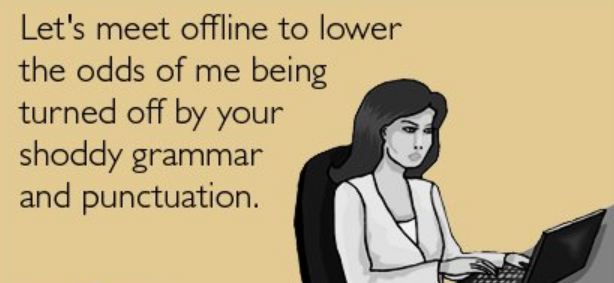

Headline of a blog post
Last weekend I posted something on my personal Twitter page that a lot of people disagreed with. I got hate tweets for two days about it, which was baffling to me, because when did having a differing opinion become so offensive to people? Are we all supposed to be cookie cutter versions of one another, never having or voicing a contrasting idea or thought or viewpoint or opinion? How boring would life be if that was the case?
Update on latest maybe set-up...
Well, there's really no update...but I can tell you what little has happened. So, the guy, we'll call him JW texted me Friday night...saying we know some friend in common. Now, I'm fine with an initial text, but much like this set-up that went nowhere, ONLY texting doesn't really do much for me. Especially when we haven't MET yet. We texted back and forth, which was fine. Figured out we're the same age, from neighboring home towns, and he has a degree in Finance. All good. I already knew he had a daughter, and he mentioned he was going to her show choir competition the next day.
Another potential blind date...
Well, here we are in February and I might have another set-up...2 for 2 months! My friend texted me a few weeks ago about a guy she ran into (friend of her friend's husband's). Anyway, she realized he was single and sent me a text asking if I was interested. Mind you...this was prior to checking with the friend to see if this guy was even open to being set up.
